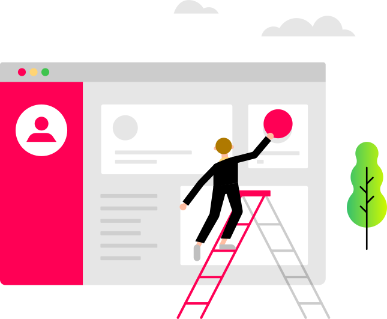
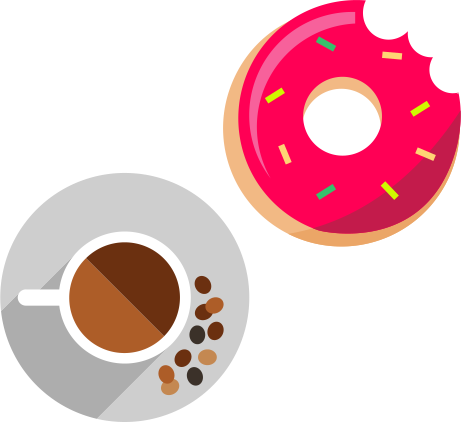
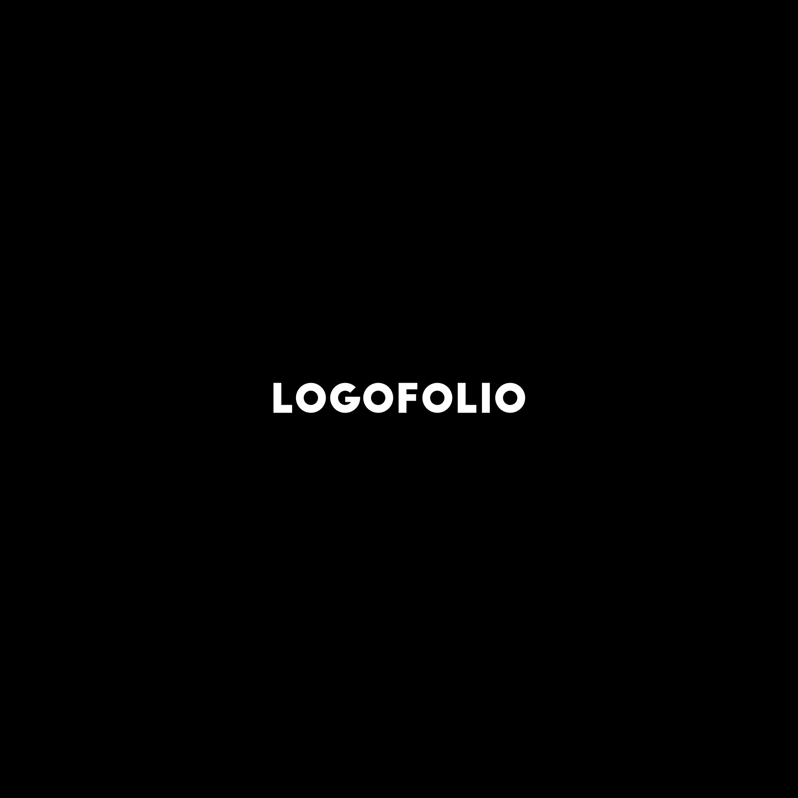
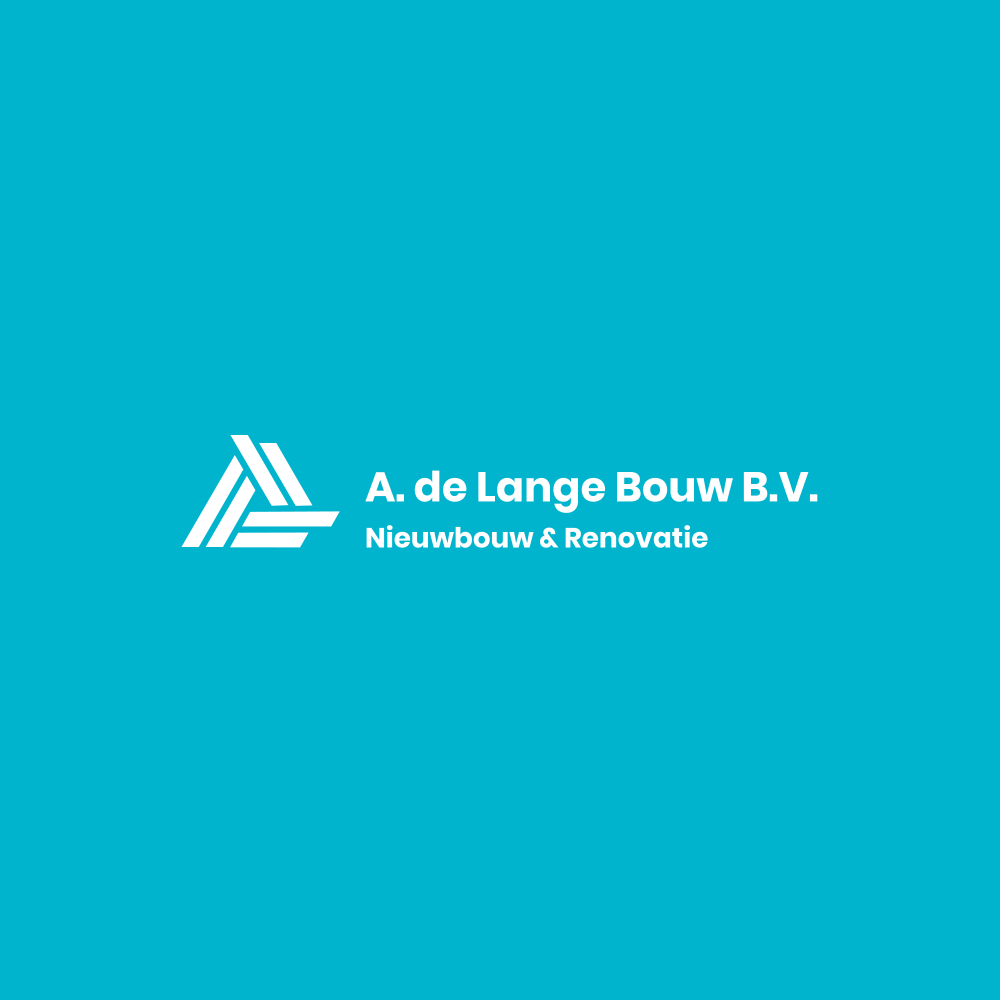
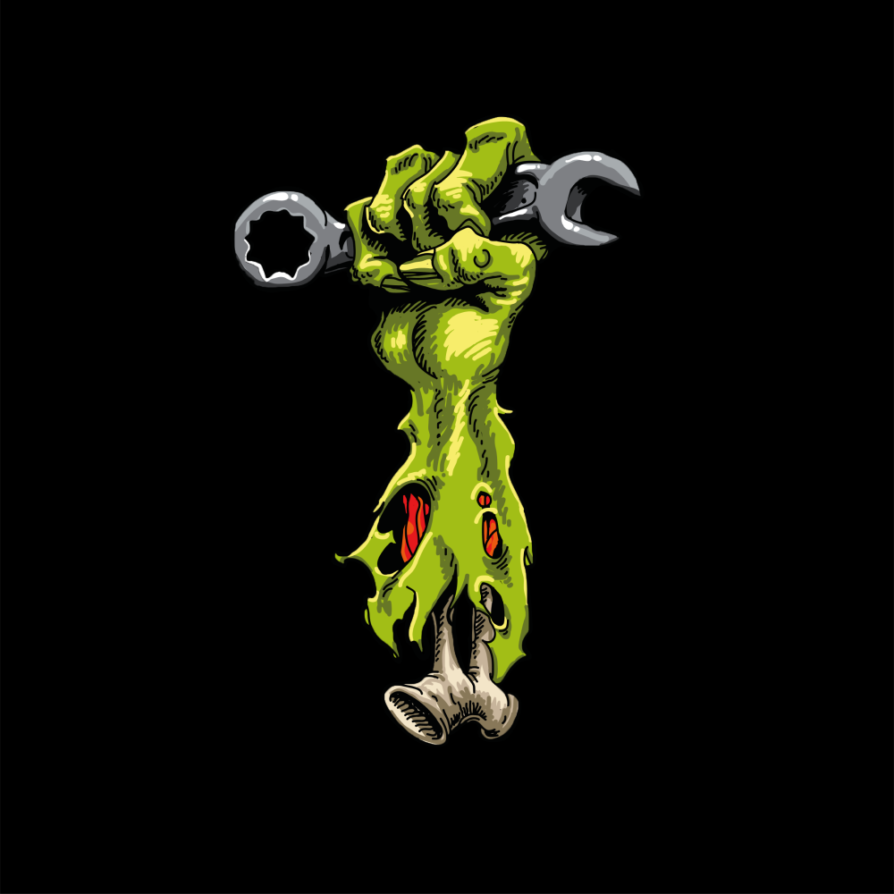

Hi
My name is Kyan Wies, a Dutch Ux/Ui designer who is currently studying Communication and Multimedia design.
My mission: make the world fresh again.
CV

What I do
I help brands grow by digitally positioning them in the best possible way.
I provide a virtual identity by creating logos, webdesigns, app designs and more.

What I use
Pen, paper, good coffee and a laptop is all I need.
I use a wide variety of programs to create the best designs for you.

Logofolio
I love to make logos for people. These are the logos I'm most proud of. They were all made on request.
Vol.1
Vol.2


Rewant
Rewant is a concept application for hiring oldtimers from their owners. I designed the app with a group of 4 people.
Look
